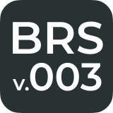

・基本的なルールは BRS ver.003 に準拠します。

・楽曲の種類はオリジナル、アレンジ、リミックスのいずれかであること。
・アレンジ、リミックスの場合は各自で許可取りを行い、出展元を明記して下さい。
・これらのやり取りで問題が発生しても運営は一切の責任を負いません。
・登録可能なBMSの数に制限はありません。
・アピール規定の制限はありません。
・本イベント開催前に公開した未BMS化楽曲をBMS化して登録することも可能です。
・演奏可能なbms、bmson、pmsが1譜面以上含まれていること。
・特定のプレイヤーでしか動かない譜面は推奨プレイヤーを明記してください。
・評価期間中の差分やBGAの追加は、DLリンクを追加する形でのみ許可します。
・登録期間終了後運営からのパッケージ配布を行います。
・AIを作編曲に使用した作品は「人間の著作物であると認められる範囲」のみ許容します。
・VSTにAI技術が使用されているものは全般的に許可します。
・ルールに違反していると運営が判断した作品は、警告後一定期間修正されない場合失格となります。
・そのほか運営が不適切と判断した作品に関しても警告の後失格とする場合があります。